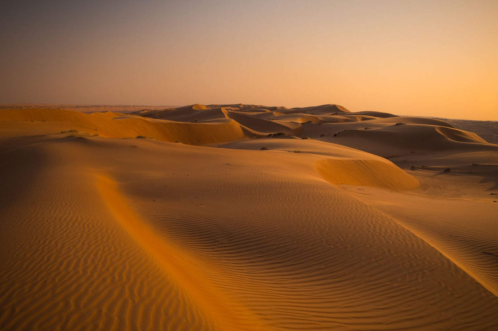
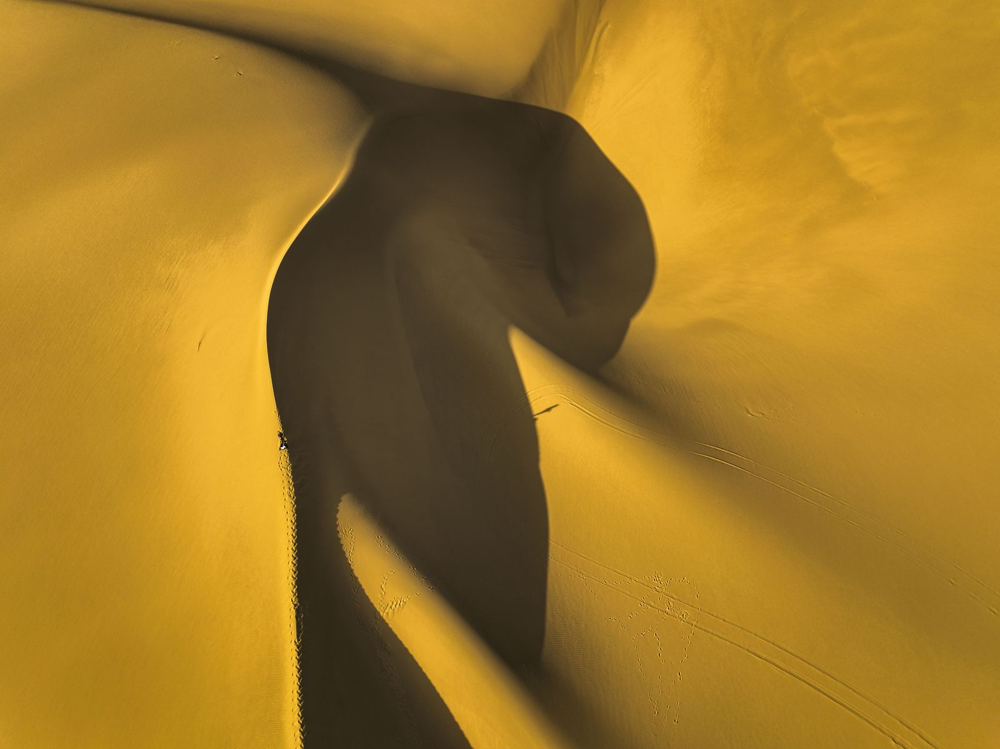
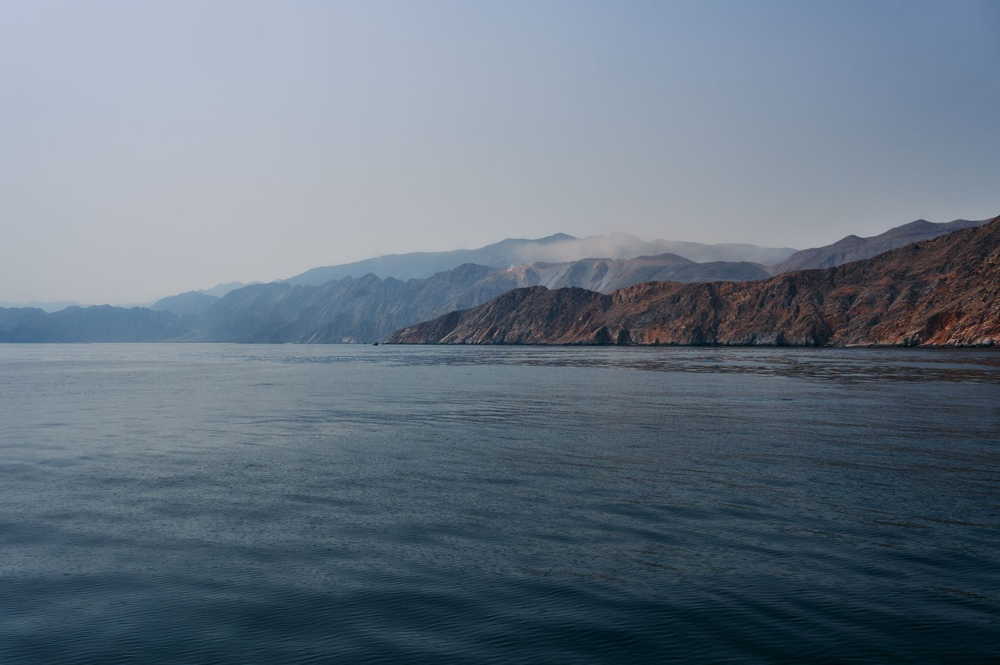
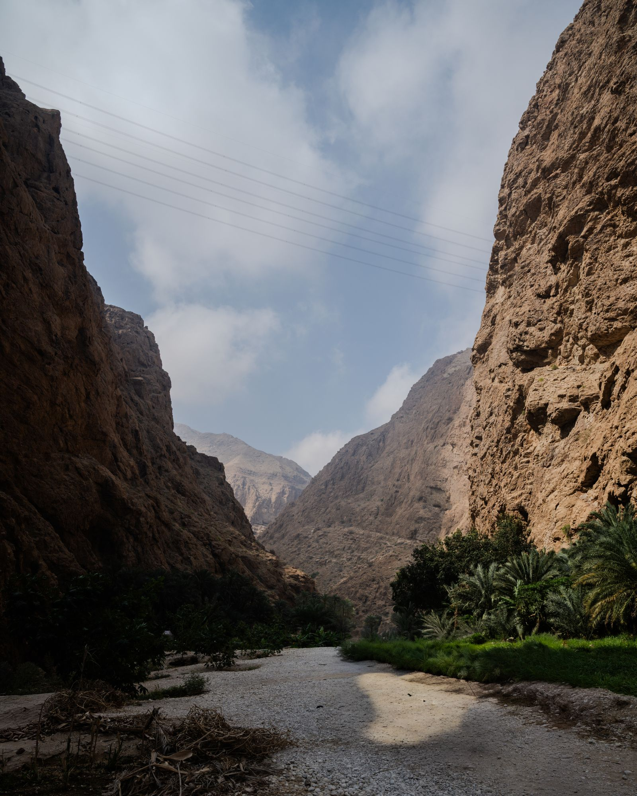
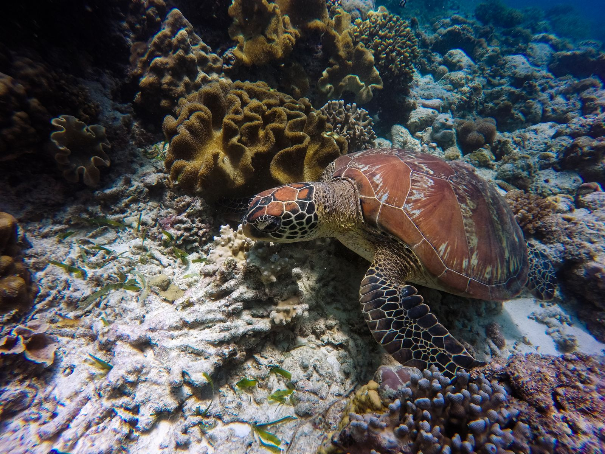
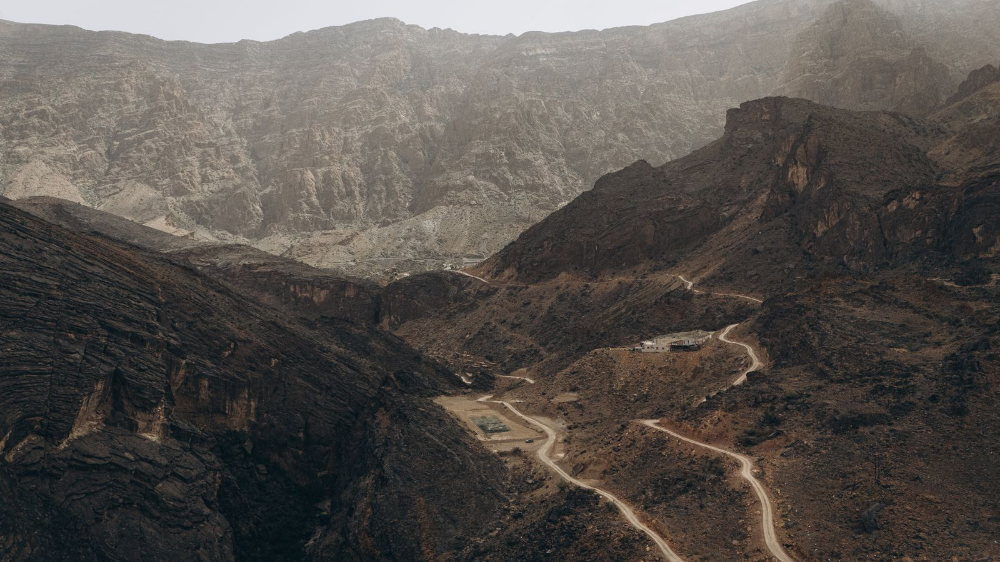
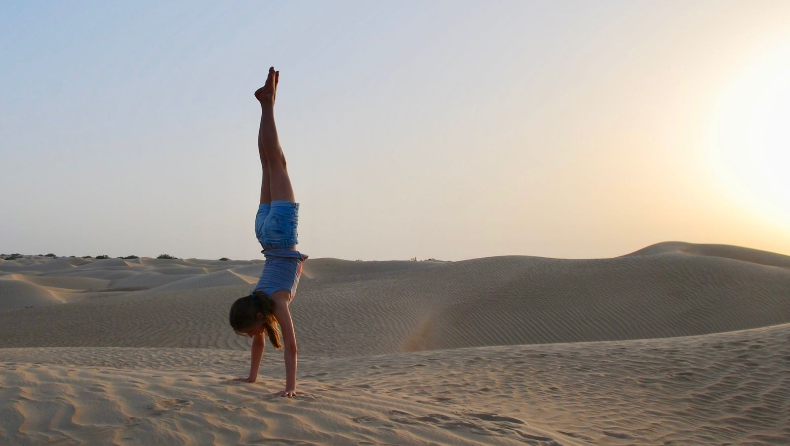
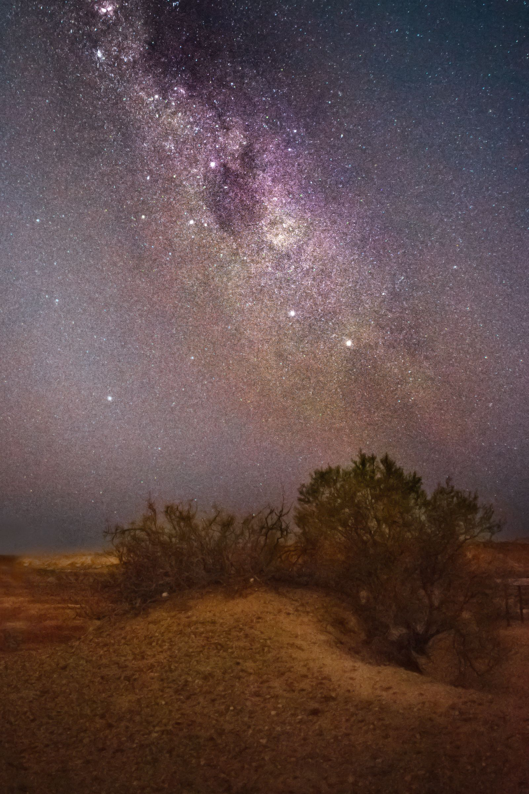

Experiences & Activities
Oman's range is not really a range of places. It is a range of speeds — and the fastest and the slowest of them are two hours apart.
You can fall out of a plane above the Wahiba Sands in the morning and be sitting on a rug in the same sand by dark, saying nothing to anybody. Pick the day you want by the pace of it, not by the map.
Four ways to spend a day here. Choose the one your trip is short of — most people find they want two of them.
8 experiences

Twelve thousand feet above an ocean of dunes, and about forty seconds where the horizon is the only thing holding still.
Placeholder details — availability and pricing to be confirmed.

A kilometre of steel strung between two bare cliffs, with the sea a long way down and going nowhere.
Placeholder details — availability and pricing to be confirmed.

A boat across, an hour of walking in, then a swim through a slot in the rock barely wider than you are — to a waterfall inside a cave.
Placeholder details — availability and pricing to be confirmed.

A protected reserve an hour offshore: turtles, rays, and the odd whale shark passing through between August and November.
Placeholder details — availability and pricing to be confirmed.

A ledge path cut along the rim of the Grand Canyon of Arabia, ending at an abandoned village nobody has lived in for fifty years.
Placeholder details — availability and pricing to be confirmed.

An hour on a ridge of sand while the light arrives, which in the desert it does all at once.
Placeholder details — availability and pricing to be confirmed.

A silent hour on the sand, then somebody who knows the sky points at it. There is no light for two hundred kilometres.
Placeholder details — availability and pricing to be confirmed.
A wooden boat out of Mutrah, the old harbour going gold behind you, and dinner served somewhere off the cliffs.
Placeholder details — availability and pricing to be confirmed.
Almost none of this needs arranging far in advance. What matters more is the season, the time of day, and who is running it.
October to April is the season for everything outdoors, and January is the pick of it. Summer belongs to the water and to Salalah, which gets its own weather from June.
A few days is usually enough. The exceptions are the small-group things — diving, skydiving, anything with one instructor per guest — which go a week or two out in high season.
Most of these include the transfer. If yours does not, a hire car reaches nearly all of them on sealed road — with the exception of the mountain and the sands, which want a 4×4 and some experience of one.
Modest clothing away from the beach and the hotel pool, more water than you think, and shoes that can get wet for anything with a wadi in the name.
Every operator listed here is licensed by the Ministry of Heritage and Tourism. Prices are per person unless a card says otherwise, and are quoted in Omani rial.
Wadis close after heavy rain and boats stay in when the sea is up — both happen, and both are decided on the day. Cancellations for weather are refunded in full.
Start from the map instead. See which of these sit near each other, and how much of the country a week actually reaches.
PLAN YOUR JOURNEY